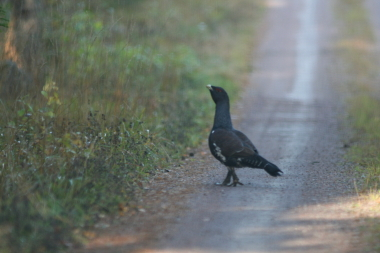

Stormon
Nås enklast med bil från Films kyrka varifrån det är skyltat mot Florarna och Stormon. Men det går även att köra från Dannemora via Söderskogen och Bryttbyn varifrån det sedan är skyltat.
Vägen till Stormon hålls öppen året runt och parkeringen röjs från snö vintertid. Plats för ett 20-tal bilar. Här finns dass och soptunnor för besökande. Ett vindskydd eller en sk slogbod med eldstad. Ved skall finnas genom Länsstyrelsens försorg.
Det finns även ett antal bord/bänkar för att inta den medhavda matsäcken vid. Men jag rekommenderar att man tar den på en vacker plats i skogen istället. Notera dock att eldning är förbjuden en stor del av sommaren i reservatet och när det är tillåtet är det bara på de iordningställda eldplatserna.
Upplandsledens västra sträckning över Florarna passerar Stormon. Vidare utgår några av de gamla vintervägarna från Stormon. Vintertid är vintervägen som går rakt västerut över Mörkmossen ut mot den del av Gammelån som kallas Nydiket den bästa vägen ut på Storfloran på skidor eller för vandring om det är snöfritt med frusna isar. Väl ute på Nydiket/Gammelån följer man denna norrut till den öppna Storfloran vid Gammelåkröken.
Slagugglans ögon lyste i skymningen när jag råkade ta bilden med blixt. Foto: Ronny Fredriksson
Skogarna kring Stormon har historiskt varit god tjädermarker och emellanåt kan man få se tjädrar på vägen upp till Stormon. Då oftast under morgontimmarna. Från Stormon kan man med lite tur under vårvintern höra sparvugglan under skymning och gryning, slagugglan när det mörknat samt pärluggla. I skogarna norr om Stormon bla på Florberget syns emellanåt den tretåiga hackspetten.

Tjädertupp på vägen mot Stormon. Foto: Ronny Fredriksson
Vindskyddet vid Stormon. Foto: Ronny Fredriksson
Peter hugger ved vid Stormon. Foto: Ronny Fredriksson
Grillning av Falukorv på gång vid Stormon. Foto: Ronny Fredriksson
Rastplats med vindskydd/slogbod vid Stormon. På bilden från vänster: Britt-Marie, Pernilla, Åke, Jennifer, Caroline och Lennart. Foto: Ronny Fredriksson
Många besökare i Florarna vittnar bilarna om vid Stormoparkeringen. Foto: Ronny Fredriksson
F.d. Stormokojan
Idag är som nämnts den mest klassiska övernattningsplatsen i Florarna Agnsjöstugan. Agnsjöstugan är ännu kvar och i gott skick. Men fram till början av 1980-talet fanns det en annan plats som var nästan lika känd bland skogsfolk och fågelskådare som rörde sig i Florarna. Det var Stormokojan som låg en bit sydost om dagens parkering vid Stormon, på västra sidan om den myrhals som vägen till Stormon korsar strax före parkeringen/vägändan. Det fanns en stig till Stormokojan som började mitt över vägen på den plats där Upplandsleden kommer från Vika vid vägen mellan Karkebo och Stormon. Den går fortfarande att följa delvis, men är ej skyltad eller markerad.
Stormokojan då den ännu fanns på mitten av 1960-talet. Själva kojan och stallet. Bild upplåten av Leif Ljung
I gamla tider fanns det en sommarstig som fortsatte söderut från Stormokojan (på östra sidan av myrhalsen) ner till Sibbo. Har du vana skogsögon kan du än idag följa den delvis….en önskan från min sida, vilket jag föreslog naturvårdsenheten på Länsstyrelsen då jag var tillsynsman var att återuppliva denna stig och göra den till markerad led. Det fanns ett intresse men det föll i glömska.
Tanken var att knyta ihop leden söder om Sibbo med Gullstigen som finns beskriven på sidan om leder och stigar. På det sättet skulle man kunna få en fin vandringsled från Örbyhus sidan av Florarna och knyta ihop den med de övriga lederna i Florarna.
Nedanför f.d. Stormokojan på myrhalsen gick eller snarare går även den gamla vintervägen som gick hela vägen mellan Sibbo eller Stora Agnsjön och Vikasjön. Vi som känner den använder än idag denna väg som skidväg. Emellanåt är spåret riktigt fint.
Många är de jägare som genom åren övernattat i Stormokojan för att jaga tjäder på spel. Andra skogsmänniskor har haft kojan som utgångspunkt för att få njuta av tjäderns spel eller ugglornas konsert på vårvintern.
Ursprungligen var Stormokojan en huggar koja med ett stall för hästarna etc. I närheten av den fd kojan kan man än idag finns brunnen/källan om man är lite nyfiken.
Stormokojan fick aldrig chansen att bli upprustad på samma sätt som Agnsjöstugan. Men än idag finns en iordninggjord skylt till Stormokojan liggande i förrådshuset vid tillsynsmannatorpet Västergärdet. Tanken Domänverket hade var helt klart att rusta även Stormokojan på samma sätt som gjordes med Agnsjöstugan. Anledningen var att Stormokojan drabbades av en brand.
Gläntan där Stormokojan en gång stod syns nu mindre år från år. Skogen återtar platsen. Men om ni har tid…..stanna gärna till och skänk en tanke till forna skogsmän som tillbringat tid på denna plats.
Denna bild tog jag någon gång i mitten av 1980-talet. Brunnen/källan vid f.d. Stormokojan. Idag tror jag träskoningen är helt borta. Foto: Ronny Fredriksson
Resterna av stallet vid f.d. Stormokojan samt resterna av stålsängarna som fanns i kojan i mitten av 1980-talet. Själva stugan stod där jag stod och fotograferade. Det syns lite på vegetationen närmast att det brunnit här ett antal år tidigare. Foto: Ronny Fredriksson
I mars 2014 såg det gamla stallet ut så här. Foto: Ronny Fredriksson